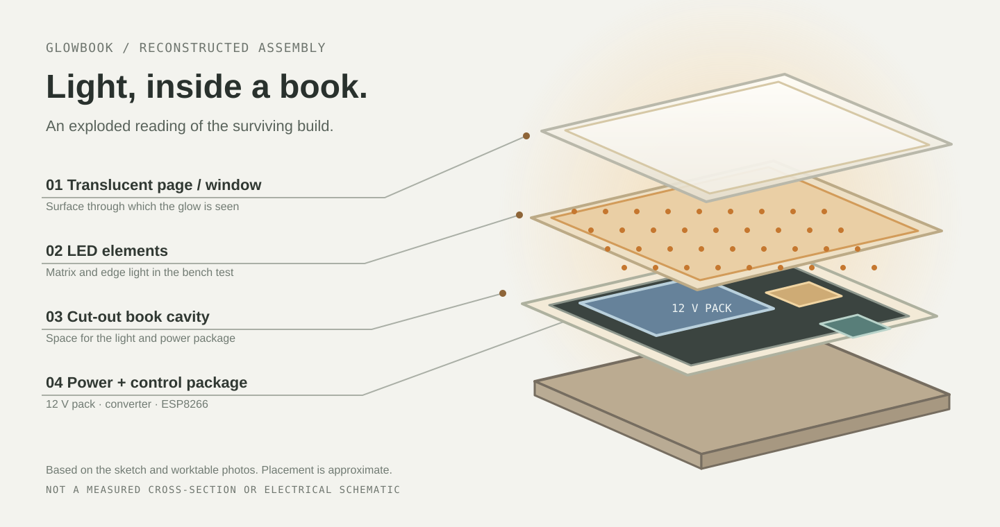
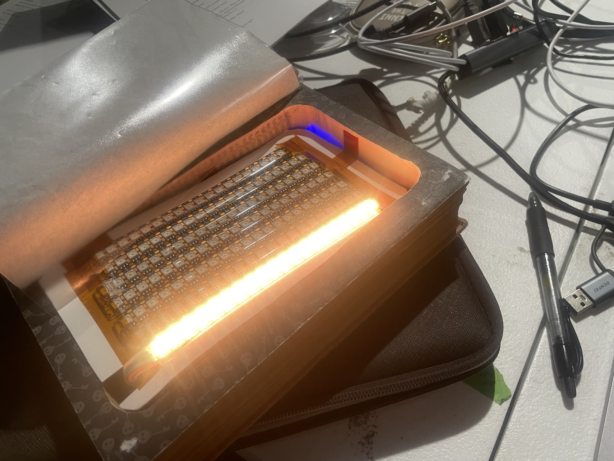
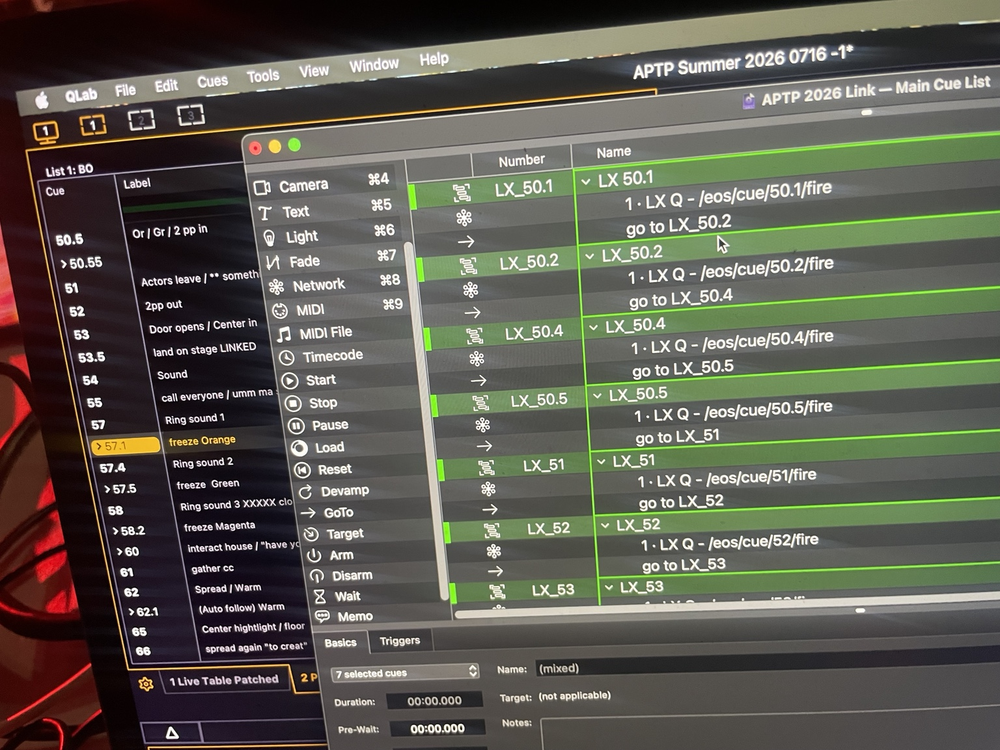
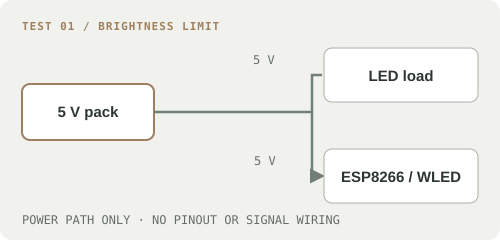
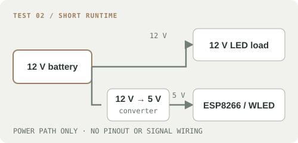
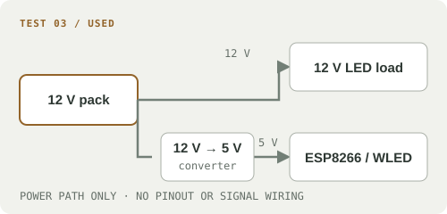
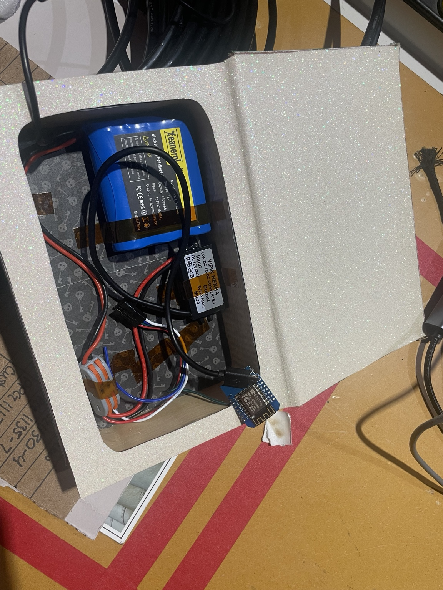
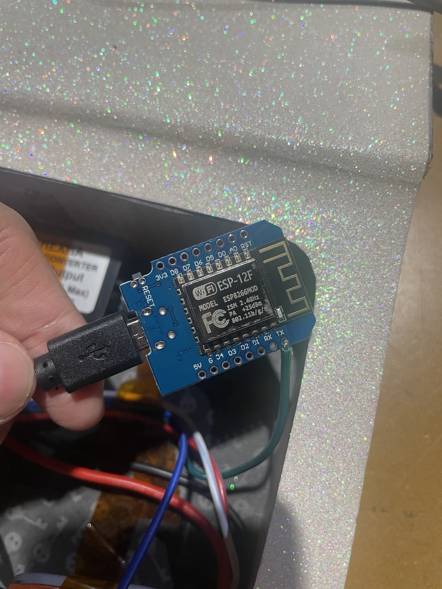
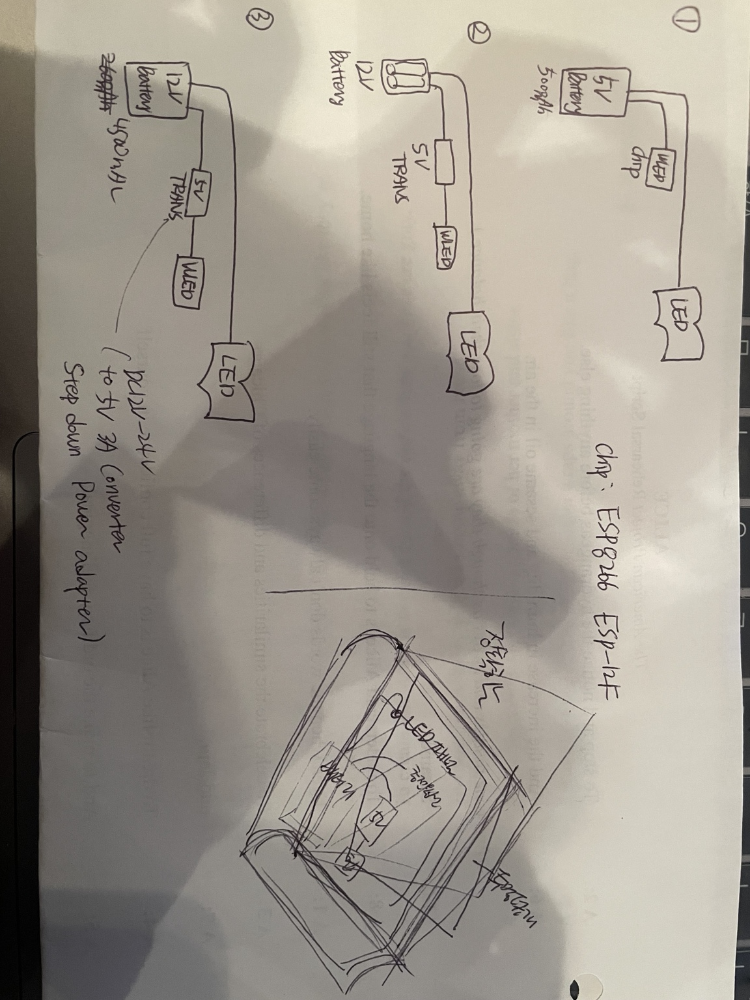
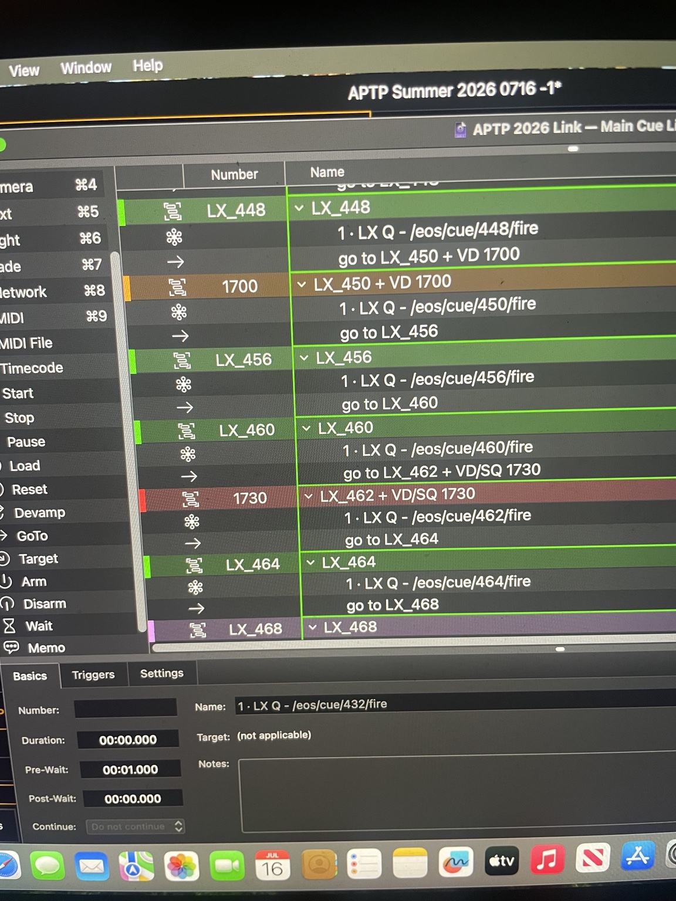

Glowbook
Could a book appear to light up at a precise musical moment, without an onstage tether?

A higher-capacity 12 V battery and cue-linked control produced a working effect. Weight and connector heating remained unresolved.
LED · ESP8266/WLED · Eos · QLab · OSCWhat worked
The illuminated book and the production cue workspace are shown here as separate records of the physical build and lighting control.


Three power tests
Brightness limited the first setup; runtime limited the second. The third powered the effect in the production cue workflow.
5 V battery

Observed Brightness was insufficient; my note records a limit of about 28% in this setup.
Decision Move to a 12 V power configuration.
Compact 12 V battery

Observed The available runtime was only a few minutes, requiring frequent battery changes.
Decision Increase battery capacity.
Higher-capacity 12 V battery

Observed The book operated within the production cue workflow.
Remaining The assembly was heavy, and heat developed near a connector while powered, even with the LEDs off.
View original sketch and worktable documentation
Additional photographs show the components fitted inside the book.



Keeping cue ownership separate
Lighting values stayed in Eos. A separate lighting QLab workspace carried the OSC cue requests; the main sound and projection QLab linked the musical cue across laptops. Each designer could revise their own cue list.
Sound + projection cue sequence
Connection between the two QLab workspaces
Local OSC link; lighting values stored in Eos
Wireless LED control via 2.4 GHz Wi-Fi
View a second lighting cue-list photograph

Evidence limit. The 28% figure is a setup note, not a lux reading or a diagnosis of the brightness limit. The diagrams are power-path reconstructions, not complete wiring instructions. The photographs show the book and QLab-to-Eos cue requests, but do not document the exact WLED command or cue latency.
A working effect, an unfinished object
Switching to a 2.4 GHz Wi-Fi network resolved a connection problem. The remaining challenge was the physical package.